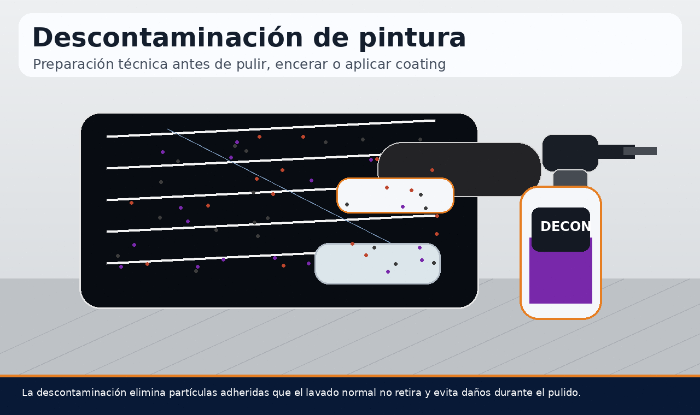
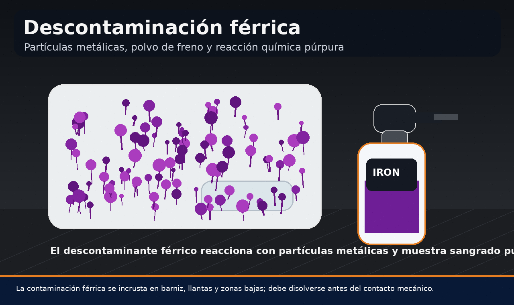
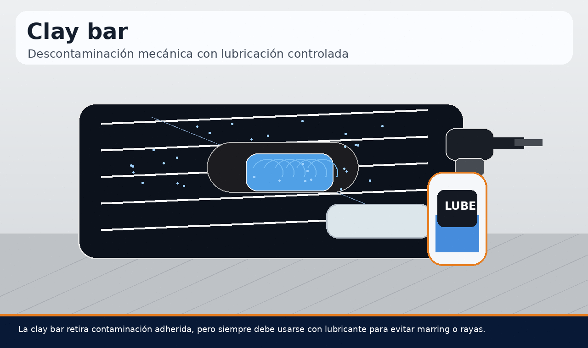
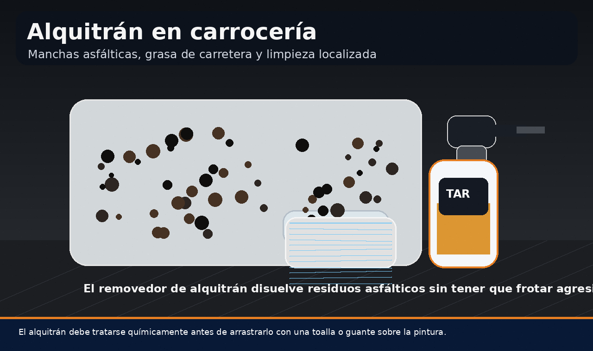
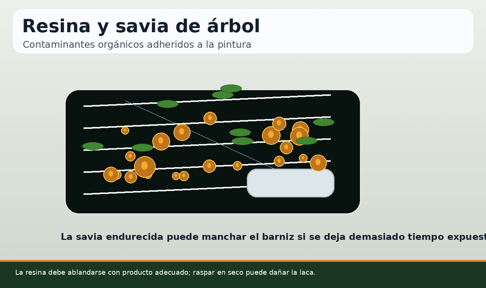
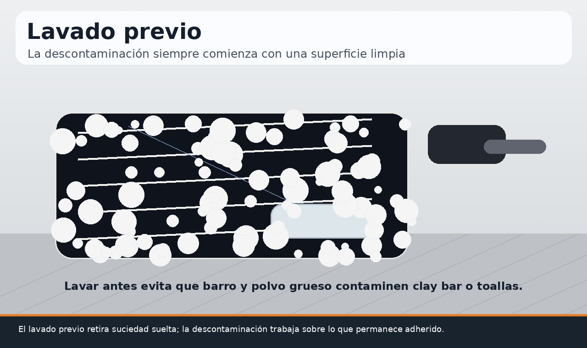
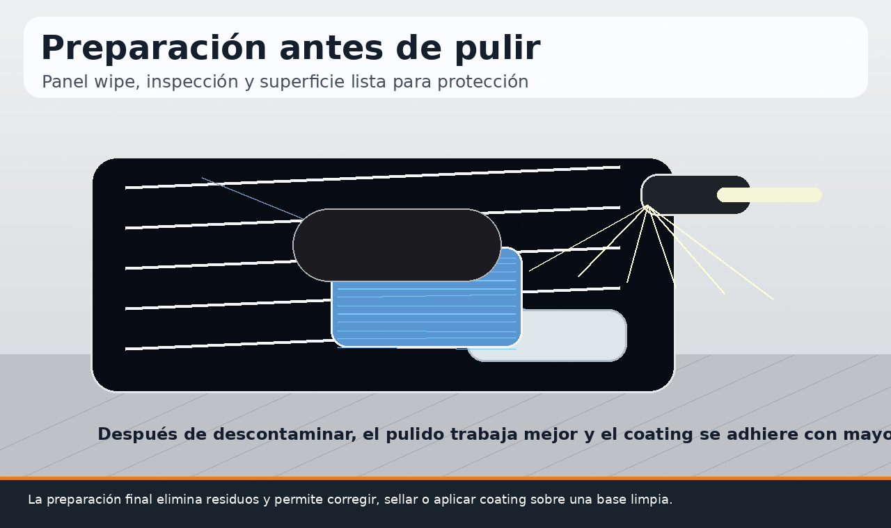
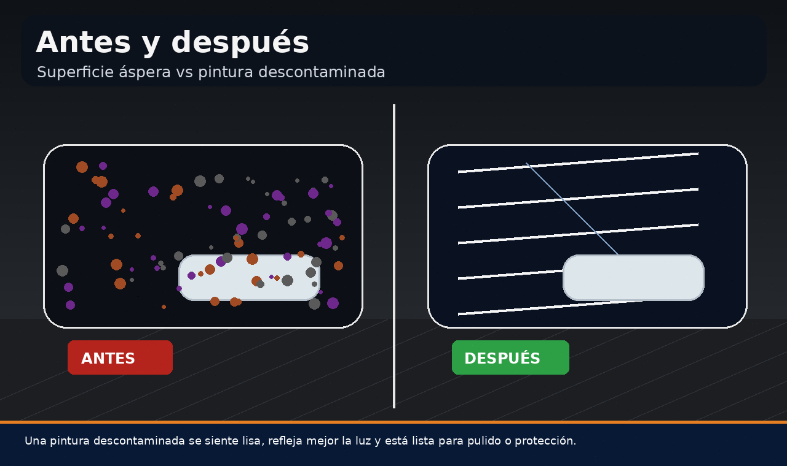

La descontaminación de pintura automotriz es una etapa fundamental dentro del detailing exterior avanzado. Aunque un vehículo pueda verse limpio después de un lavado, la superficie del barniz puede conservar partículas adheridas que no se eliminan con shampoo, espuma o agua a presión. Estas partículas pueden ser contaminación férrica, alquitrán, resina de árbol, savia, restos minerales, contaminación industrial, polvo de freno o residuos de carretera incrustados en la laca.
Por eso, cuando se habla de cómo descontaminar pintura de auto, no se trata solo de lavar más fuerte. Se trata de aplicar una secuencia técnica que combine lavado previo, descontaminación química y descontaminación mecánica con clay bar cuando sea necesario. Este proceso es especialmente importante antes de pulir, encerar, sellar o aplicar coating cerámico, porque una superficie contaminada puede rayarse durante el pulido o impedir que la protección se adhiera correctamente.

Contenido del artículo
- Capítulo 1: Qué es la descontaminación de pintura automotriz
- Capítulo 2: Contaminación férrica y polvo de freno
- Capítulo 3: Clay bar y descontaminación mecánica
- Capítulo 4: Alquitrán, grasa de carretera y residuos asfálticos
- Capítulo 5: Resina, savia y contaminación orgánica
- Capítulo 6: Lavado previo y orden correcto de trabajo
- Capítulo 7: Preparación antes de pulir o aplicar coating
- Capítulo 8: Errores comunes, mantenimiento y conclusión técnica
Capítulo 1: Qué es la Descontaminación de Pintura Automotriz
La descontaminación de pintura automotriz es el proceso mediante el cual se eliminan contaminantes adheridos al barniz que no salen con un lavado normal. Estos contaminantes pueden estar sobre la superficie o parcialmente incrustados en la capa transparente. Aunque sean microscópicos, afectan la textura, el brillo, la suavidad y la seguridad del pulido.
Una forma sencilla de detectar contaminación es pasar suavemente la mano dentro de una bolsa plástica limpia sobre la pintura lavada. Si la superficie se siente áspera, arenosa o con puntos adheridos, probablemente necesita una descontaminación. Esa aspereza no siempre se ve, pero se siente y afecta la forma en que la luz se refleja sobre la pintura.
Descontaminar antes de pulir es una regla esencial. Si una pulidora trabaja sobre un panel contaminado, el pad puede arrastrar partículas duras sobre el barniz y generar nuevas marcas. Además, los compuestos abrasivos no trabajarán de forma uniforme porque estarán mezclándose con suciedad adherida.
Capítulo 2: Contaminación Férrica y Polvo de Freno
La descontaminación férrica es una de las etapas más importantes cuando se prepara la pintura de un auto. La contaminación férrica está formada por partículas metálicas microscópicas provenientes de polvo de freno, vías férreas, industria, maquinaria, tráfico pesado y partículas ambientales. Estas partículas se adhieren al barniz y pueden oxidarse con el tiempo.
En autos claros, la contaminación férrica puede aparecer como pequeños puntos naranjas o marrones. En autos oscuros, puede ser menos visible, pero igualmente está presente. Si no se elimina, puede afectar el brillo, generar aspereza y complicar procesos posteriores de pulido o sellado.
Cómo funciona el descontaminante férrico
Un descontaminante férrico reacciona químicamente con partículas metálicas adheridas. Durante la reacción, muchos productos generan un cambio de color púrpura o rojizo, conocido en detailing como “sangrado férrico”. Este cambio visual indica que el producto está actuando sobre residuos metálicos.
El producto debe aplicarse sobre superficie fría, dejarse actuar el tiempo indicado y enjuagarse antes de que se seque. No se debe usar bajo sol fuerte ni sobre paneles calientes. Tampoco debe confundirse con un shampoo: es un químico específico para una contaminación específica.

Capítulo 3: Clay Bar y Descontaminación Mecánica
La clay bar es una herramienta de descontaminación mecánica. Su función es atrapar contaminantes que permanecen adheridos después del lavado y la descontaminación química. Se utiliza sobre pintura, cristales y algunas superficies lisas, siempre con lubricación abundante.
Cuando alguien busca qué es clay bar o cómo usar clay bar en pintura de auto, lo más importante es entender que no debe usarse en seco. La clay bar sin lubricación puede generar marring, marcas finas o rayas superficiales. La lubricación crea una película que permite que la arcilla se deslice mientras recoge partículas adheridas.
Cómo usar clay bar correctamente
Primero se lava el vehículo y se eliminan contaminantes químicos importantes como hierro o alquitrán. Luego se rocía lubricante sobre una sección pequeña y se desliza la clay bar con movimientos rectos y muy poca presión. Cuando la superficie deja de sentirse áspera, se limpia el residuo con microfibra y se pasa a otra sección.
La clay bar debe revisarse constantemente. Si cae al suelo, no debe volver a usarse sobre la pintura, porque puede recoger arena o partículas duras. También debe amasarse para exponer una cara limpia. El objetivo es descontaminar, no lijar la pintura.

Capítulo 4: Alquitrán, Grasa de Carretera y Residuos Asfálticos
El alquitrán en carrocería es un contaminante frecuente en zonas bajas, parachoques, faldones, puertas y pasos de rueda. Se origina por residuos asfálticos, obras viales, calor del pavimento y salpicaduras de carretera. A diferencia del polvo común, el alquitrán es pegajoso, oscuro y puede adherirse con fuerza al barniz.
Intentar quitar alquitrán frotando con fuerza es un error común. Al hacerlo, se puede arrastrar la partícula sobre la pintura y generar rayones. Lo correcto es utilizar un removedor de alquitrán o producto específico que ablande el residuo para retirarlo con menor fricción.
Removedor de alquitrán y limpieza localizada
El removedor de alquitrán debe aplicarse de forma localizada, dejando actuar el tiempo recomendado. Después, el residuo se retira suavemente con microfibra limpia y se enjuaga la zona. Si quedan restos, se repite el proceso en lugar de aumentar la presión.
Este paso es importante antes de pulir o aplicar coating cerámico. Si el alquitrán permanece en la superficie, puede contaminar pads, microfibras y aplicadores. Además, reduce la adherencia de ceras, selladores o coatings.

Capítulo 5: Resina, Savia y Contaminación Orgánica
La resina en pintura de auto y la savia de árbol son contaminantes orgánicos que pueden adherirse con mucha fuerza. Si se dejan durante demasiado tiempo bajo sol, pueden endurecerse, manchar el barniz o dejar marcas incluso después de retirarlas. Por eso, conviene tratarlas lo antes posible.
La resina no debe rasparse con uñas, espátulas metálicas ni objetos duros. Lo correcto es ablandarla con un producto compatible con pintura automotriz y retirarla de forma gradual. En algunos casos, si la resina estuvo mucho tiempo, puede quedar una marca que requiere pulido posterior.
Cómo retirar savia sin dañar la laca
La técnica segura consiste en lavar primero la zona, aplicar producto específico, dejar actuar, retirar con microfibra suave y repetir si es necesario. Si la savia está endurecida, el proceso debe ser paciente. Forzar la remoción puede generar marcas más graves que la propia contaminación.
Después de retirar resina o savia, conviene revisar si la protección de la pintura quedó debilitada. En algunos casos será necesario aplicar sellador, cera o coating de mantenimiento para recuperar protección superficial.

Capítulo 6: Lavado Previo y Orden Correcto de Trabajo
La descontaminación no debe comenzar sobre una carrocería sucia. El lavado previo elimina polvo, barro y suciedad suelta. Si se usa clay bar o microfibra sobre una superficie con tierra, se incrementa el riesgo de rayar la pintura. Por eso, el orden correcto comienza siempre con prelavado, lavado seguro y enjuague completo.
Secuencia recomendada
Una secuencia profesional puede iniciar con limpieza de llantas y pasos de rueda, prelavado con espuma, enjuague, lavado con guante de microfibra, secado parcial, descontaminación férrica, enjuague, removedor de alquitrán si corresponde, clay bar con lubricante y secado final. El orden puede ajustarse según nivel de contaminación.
En vehículos muy contaminados, conviene trabajar por zonas para evitar que productos químicos se sequen sobre la pintura. También se debe evitar trabajar bajo sol directo o sobre paneles calientes.

Capítulo 7: Preparación Antes de Pulir o Aplicar Coating
Descontaminar antes de pulir es obligatorio si se busca un resultado profesional. Un panel contaminado puede hacer que el pad trabaje de forma irregular, se ensucie rápido y arrastre partículas sobre el barniz. Además, los abrasivos del compuesto no podrán cortar y refinar de manera uniforme.
La preparación antes de coating cerámico también requiere una superficie descontaminada. Un coating necesita adherirse al barniz limpio. Si hay restos de alquitrán, hierro, resina, aceites o contaminación industrial, la capa protectora puede fallar, durar menos o quedar visualmente irregular.
Panel wipe e inspección final
Después de descontaminar y pulir, se utiliza un limpiador de preparación o panel wipe para eliminar aceites de pulido, lubricantes y residuos. Esto permite evaluar el estado real de la pintura y mejorar la adherencia de selladores o coatings.
La inspección con luz ayuda a detectar contaminación restante, manchas, marcas de clay o residuos químicos. La pintura debe sentirse lisa al tacto y verse uniforme antes de aplicar protección final.


Capítulo 8: Errores Comunes, Mantenimiento y Conclusión Técnica
Uno de los errores más comunes es usar clay bar como primer paso, sin lavado previo ni descontaminación química. Esto puede generar marcas innecesarias. Otro error es dejar secar productos férricos o removedores sobre la pintura. También es frecuente usar demasiada presión, reutilizar clay contaminada o no proteger la superficie después de descontaminar.
La descontaminación profunda no se realiza en cada lavado. Debe hacerse cuando la pintura se siente áspera, antes de un pulido, antes de aplicar coating o cuando existe contaminación visible. Para mantenimiento regular, basta con lavado técnico, protección adecuada y descontaminaciones ligeras cuando sea necesario.
8.1 Rutina recomendada de descontaminación segura
- Lavar el vehículo: retirar polvo, barro y suciedad suelta antes de cualquier producto específico.
- Aplicar descontaminante férrico: actuar sobre partículas metálicas y polvo de freno adherido.
- Enjuagar completamente: no dejar que los químicos se sequen sobre la pintura.
- Tratar alquitrán y resina: usar removedores específicos sin frotar agresivamente.
- Usar clay bar si hace falta: siempre con lubricante y presión mínima.
- Secar e inspeccionar: revisar textura, brillo y zonas contaminadas restantes.
- Pulir o proteger: aplicar corrección de pintura, cera, sellador o coating según el objetivo.
En conclusión, la descontaminación de pintura automotriz es una etapa técnica que mejora la seguridad del pulido, aumenta la calidad visual del acabado y permite que ceras, selladores o coatings trabajen mejor. No se trata de lavar más fuerte, sino de identificar el tipo de contaminante y removerlo con el método correcto.